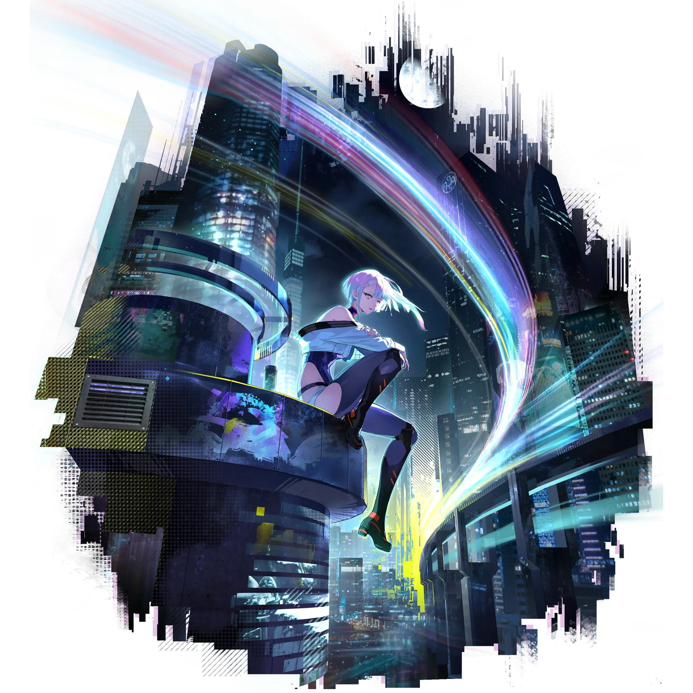

Lucy
Tier 1
Spectro
Best Lucy build guide for Wuthering Waves. See Lucy's best weapons, Echoes, teams, rotations, sequences, skill priority, and how to play Lucy.
🔍 Detail Skill
Semua skill aktif dan pasif beserta efeknya.
Data skill belum tersedia.
⚔ Weapon Terbaik
Diurutkan dari yang paling kuat. Persentase menunjukkan performa relatif terhadap pilihan terbaik.
1
Spectral Trigger
100.00%
2
Lux & Umbra
88.30%
3
Skull Thrasher
83.60%
4
Phasic Homogenizer
83.40%
5
Spectrum Blaster
79.10%
6
The Last Dance
78.80%
💎 Echo Set Terbaik
Set terbaik untuk karakter ini, diurutkan berdasarkan prioritas.
1
Shadow of Shattered Dreams
100.00%
📊 Stat Utama
Stat yang dicari pada tiap slot.
4 cost
CRIT Rate / CRIT DMG
3 cost
Spectro DMG
3 cost
Spectro DMG ≥ ATK%
1 cost
ATK%
1 cost
ATK%
👥 Tim yang Direkomendasikan
Karakter yang sering dipasangkan bersama Lucy.
Lucy
Rebecca
 Mornye
Mornye
The Shorekeeper
Verina
🔗 Lanjutkan
Build ini dirangkum dari Prydwen Institute. Starwise tidak menghitung sendiri. Angka bisa berubah setelah patch atau karakter baru rilis.